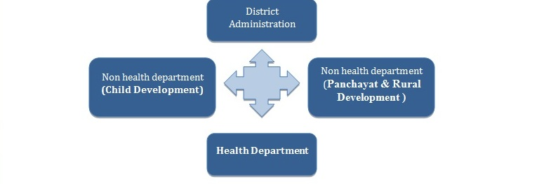

| Login instructions |
1. Using the dropdown options please select your 'Country' and 'Zone/Province'

|
2. From the given options please select 'District', 'Cycle' and 'Year'

|
3. Enter username and password and login

|
|
Overview of User Interface
After the selection of respective District, Cycle and Year, the first page will be for ‘Primary forms’. In
this interface, we are using four basic functionalities; i.e NEW, VIEW, EDIT and Delete.
NEW:
This button will be active if the respective form has not been filled yet. The official can click on this
and start entering the records as desired, but after completing the form it is important to click on SUBMIT
button to save the data on server. Please note that the interface will not allow you to fill the form if the
linked form has not been filled. So the best practice to be followed will be progress as per the Steps
sequence only.
EDIT:
If the officials want to change the entered/submitted data, then they can use this functionality.
VIEW:
This functionality will give you access to view the submitted records only. In some of the forms where
graphs has been deployed like; 1.3.1 and 5.1, you can analyse the status by using those graphs from this
functionality only.
DELETE:
One must take utmost precaution in using this. This functionality is for deleting the complete submitted
form. Please remember that deleting one form will also put effect on corresponding linked forms.
Side Panel
The side panel will help you to navigate between Primary forms, Supplementary forms,Form filling guides,
Roles and Responsibilities, and Theme Leader’s Guide.
Primary forms: This page consists of Step 1A, Step1B, Step2, Step3, Step4 and Step 5.
Supplementary forms: This will give you access to Step 1.2, 1.3.1 and 5.1.
For supporting documents one can refer to- Form filling guides, Roles and responsibilities,and Theme
Leader’s Guide.
|
Page for Primary forms

|
Page for supplementary forms

|
Page for Form filling guides

|
Page for Roles and Responsibilities

|
Page for Theme Leader’s Guide

|
|
Part A |
Form Linking |
| Document Title |
Mention the name of the specific document used for the identified theme |
Not linked to any previous form |
| Date of release |
Mention the release date of the specific document |
Not linked to any previous form |
| Primary Theme |
Mention the main specific theme |
Not linked to any previous form |
| Goal as stated in the document |
Mention the specific goal to be achieved for the particular theme as per the document |
Not linked to any previous form |
| Action points specified by the document |
|
Not linked to any previous form |
| Sl. No. |
Mention the action points specified by the document for the identified theme |
Not linked to any previous form |
|
Sub district names |
Form Linking |
| Mention the name of each sub-district |
Coverage Indicators [Specific coverage indicators will appear here] |
Part 2 of Form 1B |
|
Coverage Indicators [Specific coverage indicators will appear here] |
Part 2 of Form 1B |
|
Data source will appear to compare and monitor the sub-district specific data for this particular indicator
|
Part 2 of Form 1B |
|
Mention the specific data of the particular sub-district as per monthly progress |
Not linked to previous form |
Indicators:Indicators are theme related coverage indicators captured by the national, regional, zone, or woreda level databases , which are commonly used at local level to track progress.
There are three forms which are using these coverage indicators to track thematic work progress.
- Form 1B–‘Health System Capacity Assessments’
- Form 4- ‘Plan’
- Form 5-‘Follow-Up’
Each coverage indicator has been categorized based on their functional area. For example, the coverage indicator “Ambulance Service Response Rate” comes under “Quality Of Health Services” category.
All coverage indicators are listed underthe menu-itemcalled‘Indicators List’. This list contains all the coverage indicators stored in the DIPH platform. The indicators are of three types, namely:
- Essential Indicators – These indicators are as per DHIS2 Ethiopia, and are similar to the ones available from DHIS2.
These indicators can be added to a cycle from Form 1B or from Form 4 by users.
- Optional Indicators – These indicators are based on the parallel health reporting formats.
These indicators can be added to a cycle from Form 1B or from Form 4 by users.
- Action Indicators– These indicators are theme specific and woreda specific indicators,
which might be required by the woredas to measure or track specific aspect of the program,
and for which an indicator is not already given in Essential or Optional indicators.
These indicators can be created by users if not already available in cycle from Form 1B or from Form 4 by users.
Users should observe caution while adding action indicators as they might already be available in the list, therefore,
we should first search and look for indicators definition before creating them.
To create an indicatorclick on the ‘Create Indicator’ button on the top right corner of the section. To create an indicator one needs the following information:
- Area Name: Select one of the already provided area names from the drop down.
- Indicator Name: Name of the indicator
- Numerator: Description of Indicators numerator.
- Denominator: Description of Indicators denominator.
- Description: Detailed definition of the indicator.
- Source: Source of indicator value.
- Frequency: frequency at which the indicator value has to be captured.
To viewor search for an indicator go to the Indicatorsfrom menu list on the left and it will open the below page. Select the indicator type (Essential, Optional, or Action) from the drop down to list all indicators of that type. In order to search for an indicator,
enter search string into the search box and the list will automatically filter and show only those indicators which has the search string in them.
To edit an indicator, click on the Edit button (to be visible to only Admin, for essential and optional indicators)
To view all related details of any indicator, taking the mouse cursor on top of the indicator will show the details in a pop up box, as shown below.
Manage User:This section is only available to admin users, and using this the admin can create login credentials for new users of the system or modify credentials of the existing users. Once admin has logged in ,they can see the ‘Manage User’ option in side-menu. This option will not be visible for other users.
In manage-user section, the page consists of two features, namely :
- Create new users functionality, and
- A list of existing users
Create New User:Admin user can create a new user by going to the Manage User menu item. To create a new user, the process will be as follows :
- Enter username and password (which you want to give to the district users)
- Enter valid email-id, ensure that this is correct as all future password or DIPH related emails will be sent to this email-id.
- Select single region, and single zone,
- Select multiple number of Woredas for any selected zone, together with cycles and year combinations. The user will be able to enter and edit data
for only the Woredas, Cycles, and Years selected here, any missing selection will not be visible to the users.
(Note: You have to click on multiple items you may want to select from the drop down list to select them.
All selected items will be shown in blue while selecting and grey once saved)
- Click on create new user to create the user with above selections. Please note that in case the user tries to enter data for any other
Woreda or Cycle or Year than permitted above by the admin, he/she will be shown a message that you are not allowed to enter data for the
selected woreda/year/cycle.
- You may see the newly entered user listed in the user list below the above form.

Existing Users list: The list contains all usernames with their password which the platform holds and are already created by admin. In the list of users,next to username and password column , there is a link for editing username associated information (in green). Next column, is for deletion (in red)of any user from the platform.
DIPH-Ethiopia is a collaborative research project conducted by the London School of Hygiene and Tropical
Medicine (LSHTM) and the Ethiopian Public Health Institute (EPHI). The overall aim of this partnership is to
undertake research in collaboration with development partners based on national public health agenda, on priority
health areas; absorb and disseminate scientific technological knowledge to improve the health of the general public.
A Memorandum of Understanding was signed between the two parties in 2017.
Rolesare thepositions team members assume or the parts that they play in a DIPH cycle.Responsibilities, are
thespecifictasksorduties that members are expected to complete as a function of their roles. They are the specific
activities or obligations for which they are accountable when they are assigned to a role in a DIPH cycle. In this
section roles and responsibilities of the DIPH team are discussed.
|
The team comprises of: |
| 1. |
Focal person/ chairperson for the DIPH at district level |
| 2. |
Theme leader |
| 3. |
District level department leads (health and non-health) |
| 4. |
DIPH support team |
Role: The focal person or chairperson of the DIPH is the lead person for DIPH activities who oversees the
process of
structured decision-making and provides leadership for the regular functioning of the DIPH strategy within a district.
A focal person is usually from the district health administration and facilitates interaction between primary and
secondary stakeholders, i.e. district health administration and other stakeholders’ departments.
Responsibilities: The responsibilities of a focal person for the DIPH are as follows.
During preparatory phase of the DIPH cycle:
• Along with district-level leads from stakeholder departments, decide the dates to conduct the five steps of the
DIPH
strategy.
• Finalise and circulate the agenda of the meeting, one week before the start of the DIPH cycle.
• When conducting DIPH meetings:
• Nominate the theme leader for a DIPH cycle
• based on the identified themes.
• Together with this theme leader, decide the theme for the district (step 1 of the DIPH cycle).
• Chair meetings for developing an action plan (step 4 of DIPH cycle) and the follow-up of an action plan (step 5
of
DIPH cycle).
• Conduct a monthly review with the theme leader on the progress of the action plan.
Role: Every cycle will have a designated primary stakeholder as the theme leader. He/she is nominated by the
DIPH
focal person, in discussion with officials from secondary stakeholder departments. Theme leaders are chosen according
to the selected themes – one programme officer can be responsible for different health themes, depending on his/her
expertise in those areas.
Responsibilities: The theme leader is responsible forthe overall execution of cycle-specific DIPH steps. The
responsibilities of a theme leader during a DIPH cycle are as follows.
During the preparatory phase of the DIPH cycle:
• Compile health systems data from differentsources for content analysis.
• Conduct content analysis and identify data elements to create indicators with the assistance of data managers
from
the district health department.
• Prepare analytical tables of major indicators in the health district, so that the focal person of the DIPH
cycle and
secondary stakeholderdepartment leads can suggest possible themes. This process is done two weeks before the DIPH
cycle.
• Circulate the date and agenda for organising the DIPH steps, in consultation with the focal person.
• Prefill Form 1 for Step 1 before the Step 1 meeting, in close discussion with district leads, i.e. data
manager(s)
and the leads from stakeholder departments.
• Nominate a person to fill the DIPH step formsduring meetings.
• Organise the venue for the meetings.
Conducting DIPH meetings (Steps 1-4):
• Leads the discussion and encourages all the members to voice their opinion (see core skill 1– determinants of
decision-making)
• Follows-up with the leads from secondary stakeholder departments and provides necessary instructions to capture
the
status of action-points at the sub-district level.
• Allocates 10-15 minutes to discuss the progress of the action plan with the sub-district officials during
regular
public health meetings at the district level.
• Compiles the action-plan status at the district- level and shares this with the DIPH focal person for that
cycle.
Follow-up on action points (Step 5):
• Orient the sub-district secondary stakeholders of all the non-health departments regarding the indicators for
the
follow–up action points and ensure that they share the data each month.
• Follow-up with the leads from secondary stakeholder departments and provide necessary instructions to capture
the
status of the action-points at the sub-district level.
• Allocate 10-15 minutes to discuss the progress of the action plan with the sub-district officials during
regular
public health meetings at the district level.
• Compile the action-plan status at the district- level and share with the DIPH focal person for that cycle.
Role: The representatives from primary and secondary stakeholder departments are responsible for highlighting
the
relevant themes in their area of concern. Managerial leads from the district health department are primary
stakeholders, while those from non-health departments usually play the role of secondary stakeholders. Sometimes, it
will be appropriate for them to be accompanied by their respective data managers. Managerial leads should participate
in every DIPH meeting, and actively contribute to the discussion. The leads of the secondary stakeholder departments
are entrusted with monitoring the action-point components assigned to their particular department.
Responsibilities: The responsibilities of district-level department leads (health and non-health) during a DIPH
cycle are as follows.
• Participate in all the DIPH steps and engage in the planning and implementation process.
• Assist the theme leader in orienting sub-district personnel to complete the Step 5 forms.
• Regular follow-up with the sub-district officialson the completion of action-plans.
• Compile and analyse sub-district progress reports and send them to the theme leader on a regular basis.
• If needed, meet with theme leader and focal person for the DIPH cycle to share progress on the action points.
Role: The DIPH support team comprise training personnel from the London School of Hygiene & Tropical Medicine
and
country-specific leads for the DIPH. After providing the initial training, their role is hand-holding and
problem-solving for the initial few cycles until the strategies are fully embedded in the district for future
DIPH-related activities.
Responsibilities: The responsibilities of the DIPH support team are as follows:
• Orient the district focal person and the theme leader about the DIPH process, based on the training manual.
• Orient the district focal person and the theme leader about the DIPH digital interface.
• Build the capacity of district health managers to carry out DIPH-related activities, through training.
• Ensure a smooth handover of the DIPH process to the DIPH focal person, after hand-holding during the initial
DIPH
cycle.
• Guide the theme leader if there is any confusion about the DIPH steps and forms during DIPH meetings.
• Share the findings of the cycle’s monitoring report with the DIPH district focal person and the cycle’s theme
leader.
Role: Every cycle will have a designated stakeholder as the theme leader; he/she will be nominated by the DIPH
District Nodal officer, in discussion with the Chief Medical Officer and heads of non- health departments (Child
Development and Panchayat & Rural Development).
The theme leader is responsible for the overall execution of cycle specific DIPH steps. The theme leader has to
take complete responsibility of the DIPH process
Note: There can be different theme leaders for different cycles or the health district can designate one person
as the theme leader for the entire duration (year) of the DIPH process.
Responsibilities
Preparatory phaseof the DIPH cycle:
1.He/she shall need to prepare analytical tables of major indicators in the health district, so that the nodal
officer of district DIPH, and department wise heads can suggest probable themes. This process needs to done two
weeks before the DIPH cycle.
2.At-least one week before, along with the DIPH District Nodal Officer will circulatethe date and agenda for
organising the DIPH steps.
3.Prerequisite for step -1: Prefill Form I Part A of step-1 before the step -1 meeting with close
discussion with District Statistical Manager and the heads of non-health departments (Panchayat & Rural Development,
and Child Development).
4.Nominate a person to fill the DIPH step forms during meeting proceedings.
5.Organise the venue of the meetings.
Conducting DIPH meetings (Step 1-4)
1.He/she shall lead the discussion and encourages all the members to voice their opinion [refer to guide: enhance
interaction and participation].
2.After each step, summarise the key points and ensure that the DIPH forms are filled completely. If there is a
need for additional information from any stakeholder, the theme leader needs to do the follow-up.
3.Circulate the forms to the district DIPH stakeholders, at-least 3 days before the subsequent meeting, invite
feedback and edit the forms.
Follow-up of action points (Step 5)
1.Orient the sub-district (block) stakeholder’s of all the departments Health and non- health departments
(Panchayat & Rural Development, and Child Development) about the indicators of follow –up action points and ensure
they send the data by every 2nd working day of the month.
2.Follow-up with the heads of stakeholder departments; provide necessary instructions to capture the status of
action-points at the sub- district (block) level.
3.There may be some action-points that need to be followed-up directly with district/state authorities like
district magistrate, state health bodies (Principal health secretary, health mission director) for issues like
recruitment, procurement, lobbying for policy change/bringing out government orders,
4.At district convergence level meetings (like Reproductive & Child Health and Public Health ) of the district,
allocate 10-15 minutes to discuss the progress of the action plan with the sub-district (block) officials.
5.Every 10th working day of the month compile the action-plan status at the district-level, and share with DIPH
district nodal officer.
Background: Data Informed Platform for Health (DIPH), an innovative approach to utilize health system data for
planning and collective decision-making to improve Maternal, New born and Child Health (MNCH) services, through
inter-sectorial convergence at district level.
Figure 1: Concept of Inter-Sectorial Convergence

Definition of DIPH Meeting
An assembly of the Government officials that enhances interaction among health and other departments (e.g. Child
Development, Panchayat & Rural Development departments) for programme appraisal and comparison to improve Public
Health services throughout the district.
Purpose of DIPH Meeting
Interaction/ discussion for sharing of Public Health data to take collective decisions and filling up DIPH forms
(Form 1, 2, 3, 4 & 5) are the major components to conduct such meetings.
Expected Outcome
1.DIPH Steps 1-5 are to be completed by involvement of District DIPH stakeholders based on interaction and
discussion.
2.Sharing of experience, success stories and ground realities helps to develop the plan in a more realistic way.
3.Increase ownership ofthe decisions generated in the meeting
4.Capacity building/ orientation of the stakeholders on various health issues of the district.
Handling dominating participants
Generally, it has been found that district level officials at the higher ranks take lead rolesin discussion during
the meeting. This does not provide much space of staffs down the hierarchy toexpress theirviews. To break this
process, team leader should allow them time & space to express their views without any tension/ fear (check Box-1).
| Underlying causes of dominant Behaviors |
Possible solutions |
- It may be due to power imbalance, as Mr. A. might hold a more senior position in the group hierarchy.
- Perhaps there's a deficit of knowledge in the group - only some people know enough about the issue to
feel confident in speaking.
- Maybe Mr. A not very sensitive to group dynamics. He's not being deliberately rude, but he simply
doesn't realise he's so dominant.
|
- Introduce a go-round: each person speaks in turn for a set amount of time, with no interruptions
- Make a group agreement at the start of the meeting to remind participants to let everyone contribute
equally.
- Pro-actively ask other people for their opinion: "Thank you, Mr. A, for your great ideas. What do other
people think?"
- Share out information before the meeting so everyone is well informed
|
Enhance participation
To deal ‘difficult’ or ‘emotionally charged’ participants, it’s vital to remember that the problem is their
behaviour and not individually as a person. Chances are that at some level, the meeting isn't addressing their
needs, or maybe they feel that the meeting is a waste of time because their opinion won't be considered when it
comes to making the final decision. To avoid this conflict, accept their views/ ideas that they express during the
meeting. It increases their ownership and it is also possible to increase their commitment to the outcomes, as well
as improving behaviour in meetings.
Enhance interaction among departments
In general, it is found that participants loose their interest and remain silent due to lack of information and
self-expressiveness. For example, in a meeting to address health issues, participants from other non-health
department may lose their interest by thinking that health is not their domain or they are not an expert like the
health department officials.
In order to engage them, the facilitator needs to turn the meeting into orientation mode. Approx 5-10 minutes
session to orient participants about the issue to be discussed and its present situation through success story/
experience sharing. It may increase their knowledge/ interest that assist them to speak and take part in the
discussion.
| I |
II |
III |
IV |
V |
VI |
| Introduction (approx. 10 minutes) |
Setting the Basic Ground Rules (approx. 5 minutes) |
Recap of Previous Meeting (approx. 10 minutes) |
Sharing of Objective & Agenda (approx.15 minutes) |
Concluding remarks (approx. 10 minutes) |
Meeting feedback from the Participants (approx. 10 minutes) |
|
DIPH Step 1 Assess (approx. 2 hour)
|
DIPH Step 2 Engage (approx. 1 hour)
|
DIPH Step 3 Define (approx. 1 hour)
|
DIPH Step 4 Plan (approx. 1 hour)
|
DIPH Step 5 Follow-up (approx. 1 hour)
|
I. Introduction:
The session will start with welcome address to all participants by the chairperson of the meeting and
self-introduction of the participants. All participants should know each other by their names, occupations/
designations, place of posting for better coordination during meeting. Not only in the meeting, but this will help
them to coordinate effectively during the implementation of action points.
"Knowing each-other After giving formal introduction, ask 1 participant about names, occupations,
designations of other participants from same department present in the meeting hall. This is a team building
exercise helps them to know each other by their names, occupations/ designations, place of posting for better
coordination
As part of this session participants’ registration sheet needs to be filled up with signatures.
II. Setting the Basic Ground Rules
Before starting the meeting it is necessary to establish ground rules, or assist the group in arriving at some
norms to avoid distraction during meeting. Following ground rules can be set:
1.Participants should focus on objectives of the meeting
2.Participants should speak one at a time
3.Each session should conclude with feedback from group members
4.All the members should restrict use of mobile phones & no side talk.
5.This is a participatory meeting so all participants should contribute.
III. Recap of Previous Meeting
Ask participants what happened in the previous meeting. Let them remind the previous step/s to link with the
topic/ issue to be discussed in the meeting. Note all the points in a board/ chart paper and refer them during
summarization through pre prepared power point presentation. This will also helpful for those participants who were
not attended the previous meeting.
IV. Sharing of Objective & Agenda:
Objective of the meeting should be explained to all participants by following ways:
1.Outline the purpose of the meeting and remind members why they are in the meeting and expectations from them
2.Review the objectives and agenda for the session if required
3.Remind them that their contribution will make the meeting success
4.Motivate them to discuss relevant points freely, without any hesitation
Ask participants about the primary agenda or topics to be discussed in the meeting that had already shared to
them. Write all the points in a board/ chart paper and refer them during consolidation by showing the predetermined
agenda and explain the missing links if any. Ensure that all of them should know what is to be discussed and its
sufficient background information to make relevant contributions/ opinions. Sample agenda is in Table 2
| Date &Time : |
|
|
|
| Venue: |
|
|
|
| Objective/ Purpose: |
|
|
|
| Time |
Issued to be Discussed |
Method of Discussion |
Responsible person / Speaker |
|
Topic Sub Topic |
|
|
|
|
|
|
|
|
|
|
| [Note: Agenda of the meeting should be circulated at least one week in advance] |
|
|
|
V. Concluding remarks
At the end of a meeting, it is useful to list the tasks to be accomplished and to assign to participants with
specified timeline. This action list should be sent to all participants in form of minutes along with a list of key
decisions made and important information recorded at the meeting.
1.Tentative date of next meeting needs to be announced.
2.A concluding statement from the Chairperson, giving thanks to all.
VI. Meeting feedback from the Participants
Feedback from the participant is essential for further improvement. Basically, it’s an opportunity for DIPH
research team to rectify faults and upgrade the process to fulfil objective effectively
| Questions |
Participant’s Feedback |
|
Y (Yes) N (No) NA (Not want to Answer) |
| The meeting purpose and objectives were clearly stated? |
|
| Was the meeting time convenient for me? |
|
| Was meeting place convenient for me? |
|
| All meeting participants were actively involved? |
|
| We used our meeting time effectively? |
|
| Mention at least two aspects of this meeting were particularly good? |
|
| Tell us two of the thinks/aspect/issues you dislike most in the meeting? |
|
| Do you have any suggestions or additional comments about this meeting? |
|
| [Note:- Circulate this form to the participants after lunch break, and collect it afterwards] |
|
Compilation of the indicators mentioned in the above table is important to generate further corrective actions.
Theme leader in support with DIPH researc team will complete the process within 10working days from the completion
of the meeting. Based on the same necessary modification should be made in the next meeting procedure.
| Questions |
Participant’s Feedback
(No. of Participants) |
|
Y (Yes) N (No) NA (Not want to Answer) |
| The meeting purpose and objectives were clearly stated? |
|
| Was the meeting time convenient for me? |
|
| Was meeting place convenient for me? |
|
| All meeting participants were actively involved? |
|
| We used our meeting time effectively? |
|
| Total |
|
| Percentage |
|
| Aspects of this meeting were particularly good as per feedback from participants:
1.
2.
3.
4.
|
|
| Thinks/aspect/issues are dislike most by the participants:
1.
2.
3.
4.
|
|
| Suggestions or additional comments by the participants:
1.
2.
3.
4.
|
|
| Modification recommended for the next meeting in consultation with district administration:
1.
2.
3.
4.
|
|
Situation analysis is the first step of each DIPH cycle to assess the current situation of the district through
health policy & planning documents review and data analysis for health system capacity assessment. This step has 2
parts (A and B)
Orient the following form and clear confusion if any:
| Form No. & Title |
Details |
| Form I,Part A: ‘Document and database checklist’ |
It includes review of three types of core documents with related sub-categories of each. This checklist will
help to identify the relevant documents and data forms required for situation analysis |
| Form I, Part B- ‘Health System Capacity Assessment with supplement table’ |
This forms is prepared to capture information on demographic characteristics, coverage indicators and
assessment of health system capacity in terms of infrastructure, general resources (supplies, finance,
technology) and human resources (personnel and skill level).
Supplement table for identifying of sub-district (block) level performance in selected indicators. |
Form I, Part A needs to be filled in detail at the first DIPH cycle; the subsequent cycles require only updating.
Show the form that filled up in the previous cycle and update it as per feedback receive from the participants.
Read the following categories of Form I (Part A) sequentially and update them accordingly:
- Policy and planning documents (state & district level)Management and Services Provision data(health & non-health
departments)
- Large scale district level surveys
Form –I, Part B with supplement table are to filled up before the step -1 meeting with close discussion with
District Statistical Manager (DSM) and the heads of non health departments (Panchayat& Rural Development and Women &
Child departments).
Show the prefill forms to participants for understanding capacity of health system & block wise performance in
selected indicators.
Stakeholder engagement is the 2nd step to understand the role of health and non health department (Panchayat&
Rural Development (PRD) and Women & Child Development departments) officials for effective coordination and
collective action for implementation of action plan.
Orient the following form and clear confusion if any:
| Form No. & Title |
Details |
| Form 2 – ‘Engage’ |
To identify theme specific roles of primary & secondary stakeholders to enhance engagement & efficiency.
Leads from the each department, NGO and private sector (if any) also be selected during the process.
Recent efforts to address the issue also tobe identified. |
Give participants an opportunity to identify their role & responsibilities through interactive discussions
| Interactive Discussions- part 1 |
Interactive Discussions- part 2 |
Interactive Discussions- part 3 |
Summarization |
| Define primary & secondary stakeholders for effective coordination. |
Give the participants 10 minutes to note their role & responsibilities in papers (department wise). |
Ask them to share their views one by one (department wise) with feedback/ suggestion by other participants.
|
Summarize the whole process by showing the filled up form II |
|
Give some example (experience, best practices, success stories) for brainstorming |
Fill up form II Appreciate innovative ideas |
Entertain feedback to finalize the form |
To identify the most immediate health concerns to be addressed on the basis of prioritization criteria:
Orient the following form and clear confusion if any:
| Form No. & Title |
Details |
| Form 3 – ‘Define’ |
To finalize priority areas to be improved upon, passible solution along with action points in terms of
reaching target population, general resources (supplies, finance, technology) and human resources (personnel
and skill level) needs to be set.
Priority setting should be done keeping in mind within the given resources and mandate that is available with
the district. |
Summary of information coming out from the situation analysis & stakeholder engagement needs to be fitted here.
Show the forms (I & II) that wasfilled up earlier in the meeting to develop action part, description of problems,
itspossible solution and also identify action required to address the issues in priority basis.
Recalling
[ Previous steps i.e. situation analysis & MNCH priority settings need to reiterate in this
step called recalling] |
Crowdsourcing
[Collect information from the participants based on previous steps i.e. situation analysis
& MNCH priority settings calledcrowdsourcing ] |
Summarization
[ Summarization is the process to review the prepared document and entertain feedback to
finalize] |
- Summary information coming out from the situation analysis & stakeholder engagement (forms I & II) need
to reiterate in this phase.
- Make participants familiar them with all points of situation analysis & stakeholder engagement.
|
- Summary information coming out from the situation analysis & stakeholder engagement (forms I & II) need
to reiterate in this phase
- Service delivery
- Workforce
- Supplies & technology
- Health information
- Finance
- Policy/ governance
- Make participants familiar them with all points of situation analysis & stakeholder engagement.
- Fill up form III
- Appreciate innovative ideas
|
- Summarize the whole process by showing the filled up form III.
- Entertain feedback to finalized the form
|
Development of action plan based on the priorities identified at district level. This should be specific and
realistic in nature to achieve goal within specific time line.
Orient the following form and clear confusion if any:
| Form No. & Title |
Details |
| Form 4 – 'Plan' |
Theme specific actions identified in Form III (priority setting) are further split into realistic action
plans to achieve goal within a time frame. This form further identifies responsible person for each actions
and timeline to complete the task.
Action points should be developed keeping in mind the feasibility of resources and mandate that is
available with the district.
Action points where State’s role is needed should be avoided.
|
Experience sharing –
- ask participants (department wise) about their involvement in the existing planning process (types of plan
prepared, last plan prepared etc.) in the district/ blocks and note all the points in board/ chart. This helps to
identify their expertise in the planning process and also brainstorming for the participants to take part in this
planning process effectively.
- Show them theme specific action identified in Form-III (priority setting) and make them understand again by
asking few open-ended questions.
- Based on the Form-III (priority setting) ask participants and generate action points one by one.
- Fill up form IV. After completion, summarize it and entertain feedback from the participants.
- Consult the district administration representative to finalise the forms.
| Form No. & Title |
Details |
| Form 5 – 'Follow-up' |
Follow- up of the action plan to monitor the implementation process. Also make necessary modification
based on implementation issues if any.
If any action points not completed within the time frame, with consultation of district administration the
person responsible for the action points can be changed.
|
- Show form 4 (category wise action points, indicators, responsible person/s and its deadline) that prepared in
the previous meeting through data sharing and collective decisions.
- Ask the responsible person/s of each action points about its implementation status as well as progress to
monitor the process. Also discuss the implementation challenges/ issues that are concern in this context.Fill up
form 5 simultaneously.
- Jointly with district administration decide how long to continue follow-up of any particular action points if
not been able to completed within the timeframe. Revised timeline, change in responsibility (if any) need to be
identified during the process and documented it in Form 5.
- After completion the above processand filling up form 5., summarize it and entertain feedback (if any) to
finalize.